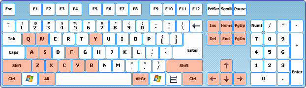

Управление
Тасэдитор управляется с помощью мыши и клавиатуры.
Для каждой операции в Тасэдиторе существует несколько вариантов её осуществления (через меню, либо с помощью хоткея, либо с помощью элемента оконного интерфейса).
С помощью одной мыши можно совершить практически любое действие, но некоторые функции быстрее запускаются с помощью клавиатуры. В данном Руководстве подразумевается, что правая рука пользователя всё время управляет мышью, а левая рука лежит на клавиатуре, периодически зажимая Shift/Ctrl/Alt или нажимая комбинацию клавиш.
Некоторые действия (например, включение/выключение функции "Auto-adjust Input due to lag") можно совершить только с помощью мыши.
Управление мышью
Наведение курсором
Курсор мыши служит указателем на элементы оконного интерфейса.
A. Отображение скриншотов и описаний для Закладок
При наведении курсором мыши на правую половину любой Закладки (в Списке Закладок) появляется скриншот из игры, соответствующий происходящему на экране в кадре Закладки в указанном ответвлении мувика. Под скриншотом появляется текстовое описание (Заметка Маркера в данном ответвлении).
B. Отображение информации о Закладке
При наведении курсором мыши на иконку любой Закладки (в Дереве ответвлений) появляется информация об указанном ответвлении, а также появляется скриншот и описание. При наведении на Закладки, не принадлежащие хронологии текущего ответвления, курсор мыши изменяется на стрелку с вопросительным знаком.
C. Подсвечивание кнопок в Заголовке Piano Roll
При наведении курсором мыши на любой символ в Заголовке Piano Roll этот символ подсвечивается зелёным светом, если в Piano Roll есть выделенные строки. Свет подсказывает, что можно щёлкнуть по этому символу для изменения Ввода или Маркеров в выделенных кадрах.
Левая кнопка
Левая кнопка выполняет основную роль.
A. Стандартные операции в Windows
Большинство элементов окна TAS Editor управляется так же, как в других Windows-программах:
B. Управление Курсором Проигрывателя
При щелчке левой кнопкой мыши по колонке иконок Piano Roll вы посылаете Курсор Проигрывателя на указанный кадр. Если не отпускать левую кнопку, можно перетаскивать Курсор Проигрывателя вверх и вниз. Можно даже перетаскивать Курсор Проигрывателя на кадры за пределами видимой области Piano Roll, для этого нужно потащить его выше или ниже границ Piano Roll. При этом чем дальше от границы уводится перетаскивающий курсор мыши, тем выше будет скорость перемотки.
C. Выделение строк в Piano Roll
Когда вы щёлкаете левой кнопкой мыши по номеру кадра в любой строке Piano Roll, эта строка становится выделенной, а если до этого были выделены какие-либо другие строки, с них выделение снимается. Можно выделить регион кадров, зажав левую кнопку мыши и растянув Выделение вверх или вниз.
Если вы хотите вдобавок к новому выделению оставить старое выделение, перед щелчком зажмите клавишу Ctrl. Так можно выделить несколько непересекающихся участков.
Если вместо Ctrl зажать перед щелчком Shift, выделится область кадров от верхнего кадра старого Выделения до места щелчка.
Если перед щелчком зажать Alt, появится Выделение по шаблону.
D. Установка/снятие Ввода в Piano Roll
Навести курсор мыши на нужную ячейку (выбрав пересечение строки нужного кадра со столбцом нужной кнопки) и нажать левую кнопку мыши. Ввод изменяется сразу же в момент нажатия. Если в данной клетке не было нажатия, оно устанавливается, если было, то снимается.
При этом выбранная строка Piano Roll становится выделенной, а с других строк выделение снимается. Благодаря этой особенности Курсор Выделения всегда появляется там, где редактируется Ввод.
Если перед щелчком зажать клавишу Shift, при щелчке изменится состояние указанной кнопки во всех кадрах, начиная с Курсора Выделения и заканчивая кадром щелчка. Состояние Выделения при этом не изменится.
Если перед щелчком зажать клавишу Alt, состояние указанной кнопки во всех кадрах, начиная с Курсора Выделения, будет установлено по шаблону. Состояние Выделения при этом не изменится.
Если в настройках установлена галочка Config -> Draw Input by dragging, можно рисовать и стирать Ввод, зажав левую кнопку мыши и перемещая курсор мыши вверх или вниз. Рисование начинается при щелчке по пустой клетке, стирание начинается при щелчке по заполненной клетке.
E. Щелчки по кнопкам в Заголовке Piano Roll
Если никакие строки Piano Roll не выделены, ничего не произойдёт. Нужно сначала выделить несколько кадров, к ним и будет применена операция при щелчке по Заголовку. Операция выполняется сразу же в момент нажатия левой кнопки.
Если в некоторых выделенных кадрах нажатие выбранной кнопки отсутствует, после щелчка нажатия появляются во всех выделенных кадрах.
Если же во всех выделенных строках соответствующая кнопка уже нажата, при щелчке все нажатия снимаются.
Если перед щелчком зажать и держать клавишу Alt, в выделенных кадрах будет установлен Ввод по шаблону.
Если щёлкать по "Frame#", вместо Ввода в Выделении будут установлены или удалены Маркеры.
F. Установка и перетаскивание Маркеров
При двойном щелчке по любому номеру кадра в Piano Roll вы устанавливаете на этот кадр Маркер и одновременно начинаете его перетаскивание. При отпускании левой кнопки Маркер физически переносится на кадр, над номером которого он был отпущен. Если отпустить Маркер над колонками Ввода, перетаскивание будет отменено, и Маркер останется на старом месте. Если отпустить Маркер прямо над другим Маркером, эти Маркеры будут поменяны местами.
Если отпустить Маркер за пределами Piano Roll, этот Маркер будет выброшен. Таким образом, чтобы удалить существующий Маркер, нужно дважды щёлкнуть по нему и перенести его за пределы окна Тасэдитора.
G. Вход/выход из поля редактирования Заметки
При щелчке по верхнему или нижнему текстовому полю начинается редактирование Заметки, отображаемой в этом поле в данный момент.
Для выхода (с сохранением изменений) нужно щёлкнуть по любому другому элементу окна TAS Editor.
H. Щелчки по Списку Закладок
При щелчке по номеру кадра в Списке Закладок (левая половина любой строчки) будет произведён прыжок Курсором Проигрывателя на этот кадр (так называемый "прыжок на Закладку").
При щелчке по индикатору времени в Списке Закладок (правая половина любой строчки) будет произведено восстановление состояния мувика из Закладки ("прыжок во времени"), а также прыжок Курсором Проигрывателя на кадр Закладки.
Эти операции срабатывают в момент отпускания левой кнопки мыши.
I. Щелчки по Дереву ответвлений
При одинарном щелчке по иконке Закладки будет произведён прыжок Курсором Проигрывателя на кадр этой Закладки (так называемый "прыжок на Закладку").
При двойном щелчке по иконке Закладки будет произведено восстановление состояния мувика из этой Закладки ("прыжок во времени"), а также прыжок Курсором Проигрывателя на кадр этой Закладки.
Эти операции срабатывают в момент нажатия левой кнопки мыши.
J. Щелчки по Журналу Истории
С помощью щелчка левой кнопкой по любой строке в Журнале Истории вы можете вернуть мувик на момент времени, отмеченный в начале указанной строки.
Правая кнопка
Правая кнопка мыши используется реже, чем левая.
A. Навигация Курсором Проигрывателя с помощью колеса
Зажать правую кнопку и вращать колесом мыши вверх/вниз. При этом курсор мыши не обязательно должен находиться над Piano Roll, он может быть на любом пустом месте окна TAS Editor или даже над окном FCEUX.
B. Скроллинг обозримой области Piano Roll
Если зажать правую кнопку, когда курсор мыши находится над Piano Roll, можно скроллировать Piano Roll вправо/влево и вверх/вниз простым перемещением мыши за границы Piano Roll. Благодаря этому отпадает необходимость использовать горизонтальный скроллбар Piano Roll.
C. Установка Закладки
При щелчке правой кнопкой мыши по Списку Закладок на текущем месте нахождения Курсора Проигрывателя ставится Закладка.
Точно так же Закладка устанавливается при щелчке правой кнопкой по иконке этой Закладки в Дереве ответвлений.
Эта операция срабатывает в момент отпускания правой кнопки мыши.
D. Контекстное меню
Когда курсор мыши находится над номером выделенного кадра (в колонке "Frame#" Списка Piano Roll), щелчок правой кнопкой вызывает контекстное меню. Меню появляется в момент отпускания правой кнопки мыши. Если щёлкнуть правой кнопкой по не выделенному кадру, ничего не произойдёт.
Контекстное меню содержит следующие пункты:
Также свои контекстные меню есть у текстовых полей (при редактировании Заметок) и у скроллбаров.
Средняя кнопка
У средней кнопки мыши есть только одна функция – ставить и снимать паузу эмуляции. Не имеет значения, где находится курсор мыши в момент щелчка средней кнопкой.
Когда эмулятор стоит на паузе, нажатие средней кнопки снимет паузу (аналогично нажатию хоткея Pause). Более того, если в Piano Roll за пределами Гринзоны находится зелёная стрелка, при щелчке по средней кнопке запустится добегание к зелёной стрелке (аналогично нажатию хоткея Restore Playback).
Если перед щелчком зажать клавишу Shift, запустится добегание к ближайшему Маркеру.
Если перед щелчком зажать клавишу Ctrl, запустится добегание к Курсору Выделения (если он расположен ниже Курсора Проигрывателя) или же начнётся повторный просмотр участка, начиная с Курсора Выделения (если он расположен выше Курсора Проигрывателя).
Когда эмулятор не стоит на паузе, нажатие средней кнопки поставит его на паузу.
В современных компьютерных мышках средней кнопкой является её колесо.
Колесо
Колесо можно вращать вверх и вниз с различной скоростью. Когда требуется высокая точность, вращайте колесо медленно. Когда требуется быстрое перемещение, вращайте колесо быстро.
A. Скроллинг обозримой области Piano Roll
Если курсор мыши при вращении колеса находится над Журналом Истории, то осуществляется скроллинг Журнала Истории. Во всех остальных случаях осуществляется скроллинг Piano Roll.
B. Навигация Курсором Проигрывателя
Зажать правую кнопку и вращать колесом мыши. Курсор Проигрывателя будет перемещаться в соответствии с вращением колеса, одновременно прокручивая на экране FCEUX события игры в ту или иную сторону.
Чтобы всегда видеть текущее положение голубого курсора в Piano Roll, нужно установить галочку "Follow cursor" в разделе Playback.
C. Прыжки по Маркерам
Аналогично кнопкам << и >>, а также хоткеям Ctrl/Shift + Page Up/Page Down.
Если зажать клавишу Shift, при прокручивании колеса Курсор Проигрывателя будет прыгать по Маркерам, позволяя быстро перейти к любому кадру Гринзоны. Piano Roll будет следовать за Курсором Проигрывателя, если установлена галочка "Follow cursor".
Если зажать клавишу Ctrl, при прокручивании колеса Курсор Выделения будет прыгать по Маркерам, позволяя быстро перейти к любому кадру мувика. Piano Roll всегда будет следовать за Курсором Выделения.
D. Пересечение промежутков во Вводе или Маркерах
Зажать клавишу Alt, навести курсор мыши на середину длинного ряда кнопочных нажатий (или, наоборот, на пустоту) и сделать одинарный поворот колеса вверх или вниз. Piano Roll проскроллируется соответственно вверх или вниз на некое количество кадров, рассчитав расстояние так, чтобы курсор мыши указывал на кадр перед началом или после окончания этого длинного ряда кнопочных нажатий (или на начало/окончание пустоты). После этого можно либо дорисовать продолжение этого ряда, либо укоротить ряд.
Управление клавиатурой

Модификаторы (Shift, Ctrl и Alt)
Зажатие этих клавиш изменяет функции щелчка левой кнопкой мыши, а также функции вращения колеса.
Если быстро нажать Shift два раза подряд, Piano Roll автоматически скроллируется к Курсору Проигрывателя.
Если быстро нажать Ctrl два раза подряд, Piano Roll автоматически скроллируется к Курсору Выделения.
Во время рисования/стирания Ввода зажатие клавиши Shift позволяет рисовать в произвольных столбцах, а не только в одном.
Клавиатурные акселераторы
Это жёстко определённые комбинации клавиш, типичные для большинства Windows-программ. В данном руководстве эти комбинации отмечаются красным цветом.

Ctrl + S = сохранить проект на диск
Ctrl + Z = откат последнего изменения (undo)
Ctrl + Y = возврат к отменённым изменениям (redo)
Ctrl + Q = восстановление предыдущего Выделения (selection undo)
Ctrl + W = восстановление следующего Выделения (selection redo)
Ctrl + A = выделить все кадры между двумя соседними Маркерами
Ctrl + B = выделить участок, ранее скопированный в Буфер Обмена
Ctrl + C = копировать выделенный Ввод в Буфер Обмена
Ctrl + X = вырезать выделенный Ввод в Буфер Обмена
Ctrl + V = вставить Ввод из Буфера Обмена поверх старого Ввода
Ctrl + Shift + V = вставить Ввод из Буфера Обмена с раздвиганием старого Ввода
Delete = очистить выделенный Ввод
Ctrl + Delete = удалить выделенные кадры из мувика
Insert = вставить заданное число кадров в мувик
Ctrl + Insert = клонировать выделенные кадры
Ctrl + Shift + Insert = вставить пустые кадры на место выделения
Ctrl + F = вызвать окно Find Note
Ctrl + PageUp / Ctrl + PageDown = прыгать Курсором Выделения по Маркерам
Ctrl + Home / Ctrl + End = переместить Выделение в начало / в конец мувика
Ctrl + Вверх / Ctrl + Вниз = переместить Выделение на 1 кадр выше / ниже
Ctrl + Вправо / Ctrl + Влево = скроллировать Piano Roll вправо и влево
Shift + PageUp / Shift + PageDown = прыгать Курсором Проигрывателя по Маркерам
Shift + Home / Shift + End = прыгать Курсором Проигрывателя в начало / в конец мувика
Shift + Вверх / Shift + Вниз = переместить Курсор Проигрывателя на 1 кадр выше / ниже
Shift + Вправо / Shift + Влево = скроллировать Piano Roll вправо и влево
PageUp / PageDown = скроллировать Piano Roll постранично вверх / вниз
Home / End = скроллировать Piano Roll в начало / в конец мувика
Хоткеи FCEUX
Настраиваемые клавиши эмулятора. См. главу Настройка программы. Клавиши, уже настроенные по умолчанию, в данном Руководстве отмечаются голубым цветом.

Ctrl + F1 = открыть последний проект
Pause = пауза эмулятора
Esc = отменить добегание
Пробел = восстановить позицию Курсора Проигрывателя
Ctrl + Пробел = переключить галочку "Auto-restore last position"
\ (обратная косая черта) = Frame Advance (продвинуться на 1 кадр вперёд)
Backspace = перемотать на 1 кадр назад
Shift + R = запустить проигрывание мувика с начала
- (белая клавиша "минус") = снизить скорость эмуляции
= (белая клавиша "равно") = повысить скорость эмуляции
Tab = Турбо (действует, пока клавиша зажата)
F1-F10 = загрузка ответвления из Закладки
1-0 = прыжок на Закладку
Shift + F1-F10 = установить Закладку
I = сохранить мувик в текущую Закладку-ответвление
P = загрузить мувик из текущей Закладки-ответвления
M = показ счётчика перезаписей
, (запятая) = показ виртуальных джойстиков
. (точка) = показ счётчика кадров
/ (дробь) = показ счётчика лага
Shift + L = перезагрузить текущий Lua-скрипт
Q = включение/выключение режима Записи
W = переключение текущего джойстика для записи методом мультитрекинга
Ctrl + R = команда Reset
Полный список хоткеев FCEUX, работающих при запущенном Тасэдиторе:
Остальные хоткеи FCEUX не будут работать при запущенном Тасэдиторе (см. главу Защита от ошибок).
Кнопки виртуальных джойстиков
Аналоги кнопок настоящего геймпада приставки, настраиваемые либо на клавиши клавиатуры, либо на кнопки реального джойстика. См. главу Настройка программы.
Если вам нужно помимо кнопок джойстика ещё вводить команды приставки, используйте меню FCEUX или хоткеи:
Эти команды срабатывают только в режиме Записи, причём для отображения результата на экране FCEUX необходимо после запуска команды (например, после нажатия Ctrl + R) ещё дополнительно нажать Frame Advance либо отпустить паузу эмулятора, чтобы впечатать команду в мувик.
Так как в TAS Editor 1.0 в Piano Roll нет колонок, отображающих записанные нажатия команд, рекомендуется сразу же после записи команды ставить на этот кадр Маркер с Заметкой о наличии здесь команды.
Управление при редактировании Заметок
При редактировании Заметок клавиатура используется для печатания текста.
1. Следующие акселераторы действуют иначе:
Ctrl + A – выделяет весь текст Заметки
Ctrl + Z – откатывает последний введённый символ
Ctrl + X, Ctrl + C, Ctrl + V – копипаст текста
Delete – удаляет выделенный текст или один символ после курсора
Home/End – перемещают курсор в начало и конец текста
2. Хоткеи FCEUX вообще не действуют.
Backspace – удаление символа перед курсором
Esc – выход из режима редактирования без сохранения изменений
Tab – переключение между нижним и верхним полем
4. Кнопки виртуальных джойстиков не действуют (но будут действовать в том случае, если в настройках FCEUX стоит галочка Config -> Enable -> Background Input).
5. Управление мышью остаётся без изменений. Щелчок за пределами поля редактирования завершает редактирование Заметки, сохраняя изменения. Также, если во время редактирования увести соответствующий курсор из области редактируемого Маркера, изменения сохранятся, и начнётся редактирование Заметки другого Маркера.
Created with the Personal Edition of HelpNDoc: Full featured Kindle eBooks generator